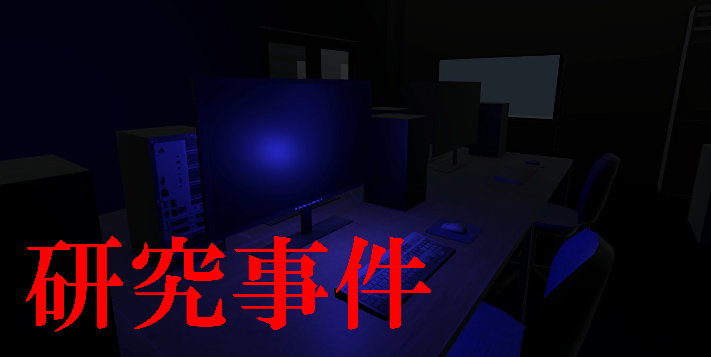
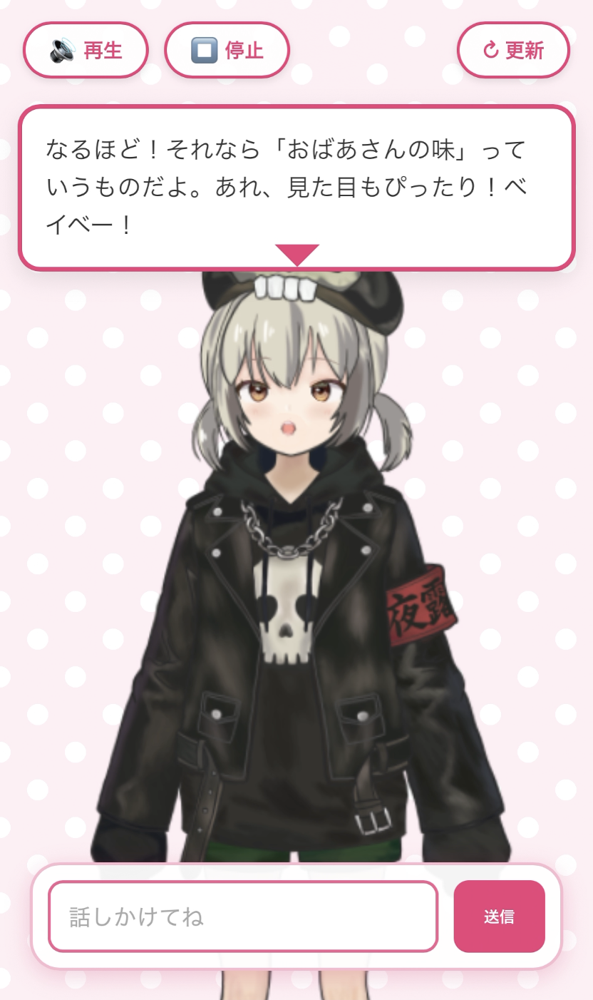
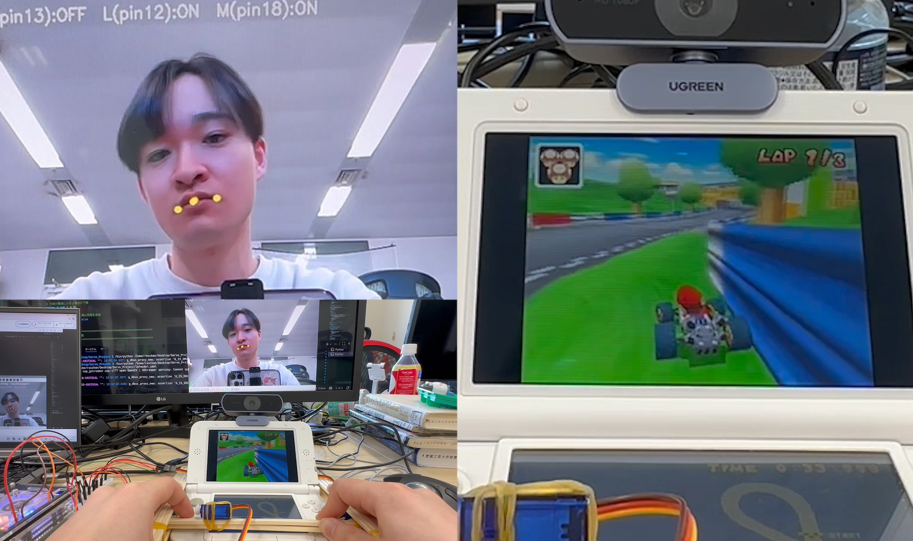
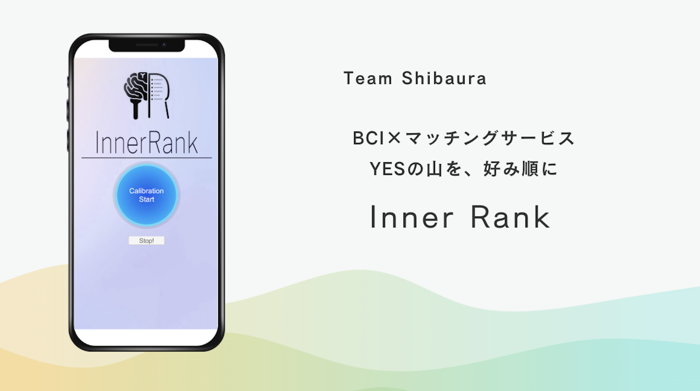
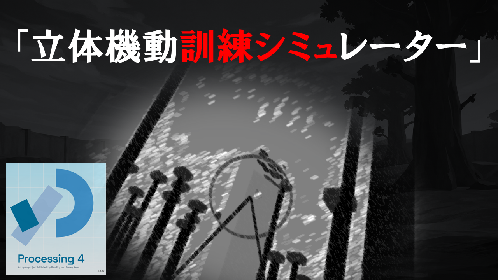
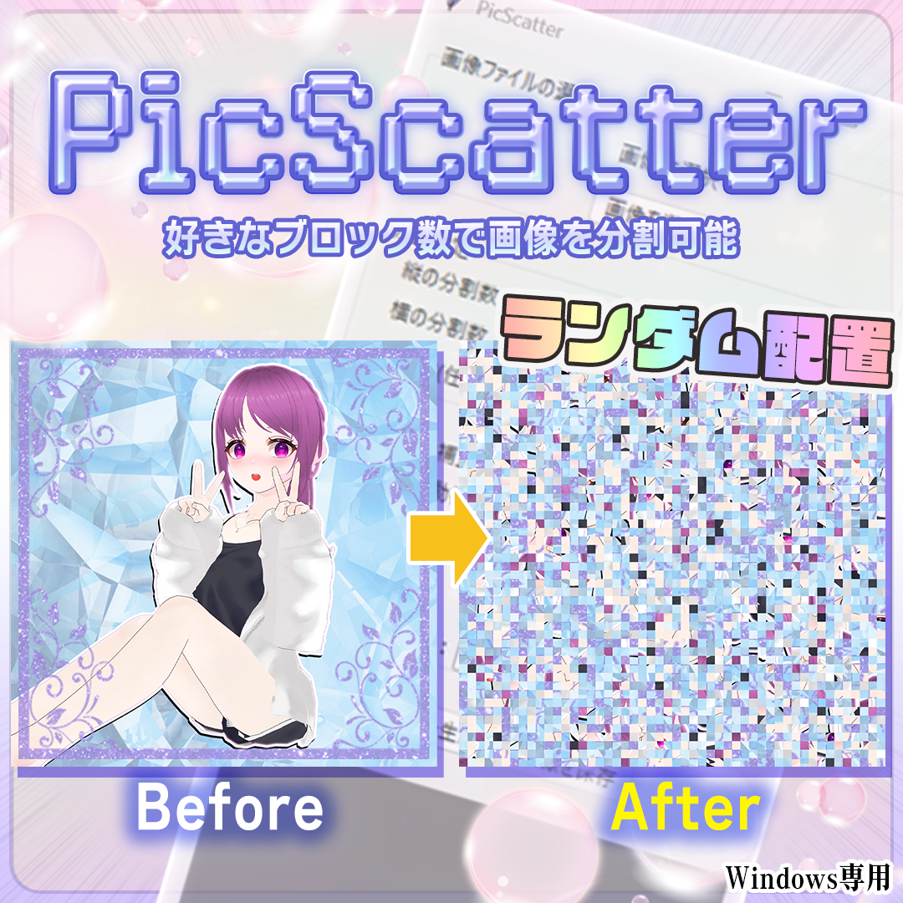
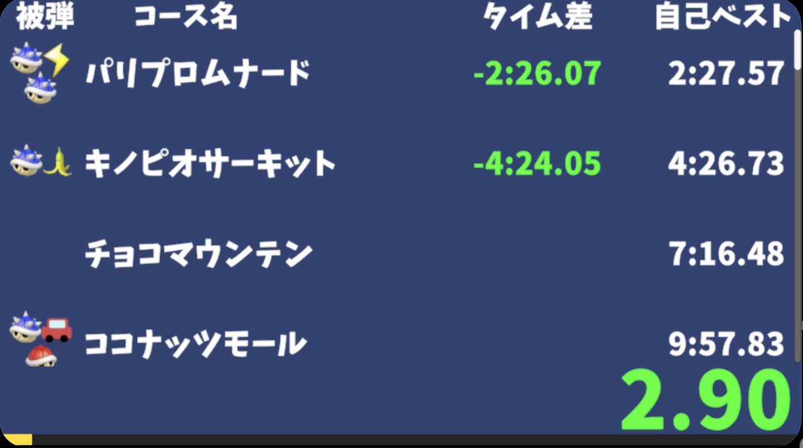

Portfolio
Works

ホラーゲーム「研究事件」
大学研究室を舞台にした一人称視点の探索型ホラーゲーム。シナリオ・モデリング・プログラムを全て担当し、今秋リリースを目指して制作中。

AITuber「夜露しずく」
Raspberry Pi 5上にローカルLLM環境を構築し、Live2Dモデルと音声会話を組み合わせたAITuberシステム。API依存を抑えた常時稼働構成を実現。

顔認識ゲームプレイシステム
顔の動きをゲーム操作コマンドに変換し、サーボモーターで物理ボタンを押下する入力システム。手を使わずにマリオカートDSをプレイできる。

InnerRank — Tokyo BCI Hackathon 2025
マッチングサービスにBCI技術を融合した準優勝作品。プロフィール画像への脳波反応から潜在的な好意をランキング化するシステムを実装。

立体機動訓練シミュレーター
Processingで制作した3Dアクションゲーム。マウスの回転をワイヤー速度に、ドラッグ軌跡を斬撃判定に変換する独自アルゴリズムを実装。

PicScatter — 画像分割・再配置アプリ
画像を分割・ランダム再配置するPython製GUIアプリ。脳波実験の視覚刺激作成が目的。GUI操作で分割から画像保存まで完結。Boothで販売中。

RealTimeAttack Timer
マリオカート8DX RTA配信用タイマー。コース名・アイコン・自己ベストは外部ファイルで管理し、コードを変更せず表示内容を更新できる構成。

UE5 解説系VTuber「それなれな」
Unreal Engine 5の初学者向けコンテンツを企画・制作・発信。解説動画・開発配信・Shortsを個人で制作し、英語資料から習得した知識を日本語で発信。